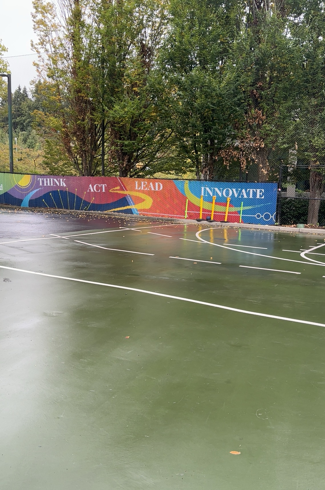

My website is a triadic color scheme. With a wide array of colors it uses colors from multiple spectrums. I am trying to ellict the emotion of wartmth and relaxation with my choice of colors. Though my tinted darked colors could ellict anger or frustration. Overall I picked these colors cause I would say I'm attracted to more vibrant colors than not.
